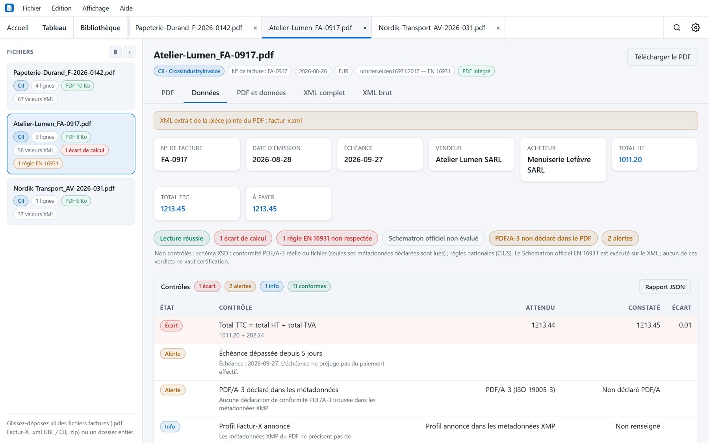

Guide pratique
Vérifier une facture Factur-X : la checklist en 7 contrôles
Un PDF Factur-X peut s'ouvrir parfaitement et contenir un total faux. Voici ce qu'il faut regarder, dans l'ordre, sur chaque facture électronique que vous recevez.
Depuis le 1er septembre 2026, toutes les entreprises doivent pouvoir recevoir des factures électroniques. L'obligation d'émettre s'applique depuis cette date aux grandes entreprises et aux ETI, et au 1er septembre 2027 pour les TPE et PME.
Concrètement : les factures arrivent désormais sous une forme que personne ne lit à l'œil nu, et une erreur y est invisible.
Une facture Factur-X, c'est un PDF qui contient un second document, invisible à l'écran : un fichier XML qui porte les mêmes données, mais structurées. Quand les deux divergent, c'est le XML qui est pris en compte par les outils comptables et par l'administration. Un écart d'un centime entre les deux n'est donc pas cosmétique.
Qu'est-ce qu'une facture Factur-X ?
Factur-X est le format français de la facture électronique, dérivé du standard allemand ZUGFeRD 2.x. Il repose sur la norme européenne EN 16931, qui définit quelles données une facture doit contenir et comment les exprimer, quel que soit le format.
Techniquement, un fichier Factur-X est un PDF au format PDF/A-3, auquel est attaché un XML de type CrossIndustryInvoice (CII). Le PDF est l'image lisible par un humain ; le XML est la donnée exploitable par une machine. Le format prévoit plusieurs profils, du plus simple au plus détaillé — MINIMUM, BASIC WL, BASIC, EN 16931 et EXTENDED — et le profil annoncé doit correspondre à ce que le XML contient réellement.
Le même principe existe en UBL 2.1, un autre format XML utilisé dans les échanges européens. Les deux véhiculent la même sémantique EN 16931, mais leur structure diffère.
Un PDF scanné n'est pas une facture électronique. Une simple image passée au scanner, ou un PDF généré par un logiciel de facturation sans XML joint, ne relève pas du format. Il n'y a alors rien à contrôler automatiquement : seulement des pixels.
Les 7 contrôles, dans l'ordre
L'ordre compte : chaque contrôle suppose que le précédent est passé. Inutile de vérifier les calculs d'un XML dont la structure est cassée.
1. Le conteneur : PDF/A-3, XML joint et profil annoncé
On vérifie d'abord que le PDF est bien déclaré PDF/A-3 — la norme qui autorise une pièce jointe —, qu'un fichier XML y est effectivement attaché, et que le profil annoncé dans les métadonnées XMP correspond à celui du XML. Un PDF qui se dit EXTENDED alors que son XML est MINIMUM passera inaperçu à la lecture et posera problème à l'import.
2. La structure : schéma XSD
Le XML doit respecter le schéma officiel de son format : celui du profil Factur-X annoncé pour le CII, UBL 2.1 pour l'UBL. Un XSD invalide signifie un fichier mal formé — un élément obligatoire absent, un type de donnée incorrect, une balise mal placée. Aucun outil comptable ne saura l'importer proprement.
3. Les règles métier : Schematron EN 16931
Au-delà de la structure, la norme impose des règles de fond, identifiées par des codes
(BR-01, BR-CO-10…) : mentions obligatoires, cohérence entre les
dates, ventilation de TVA, décimales autorisées. Le Schematron officiel de la Commission
européenne les évalue. C'est ce contrôle qui distingue un fichier « bien formé » d'un fichier
« conforme ».
4. L'arithmétique
C'est le contrôle qui attrape le plus d'erreurs réelles. Il faut recalculer, en décimaux exacts — jamais en flottants — :
- chaque ligne : quantité × prix unitaire, ajusté des frais et remises, doit égaler le total de ligne ;
- la somme des lignes doit égaler le total hors taxes ;
- la TVA de chaque taux doit correspondre à sa base ;
- le total TTC doit égaler HT + TVA, et le net à payer doit découler de l'échéance et des acomptes.
Une tolérance d'un centime est admise sur certains arrondis. Au-delà, c'est une anomalie à signaler au fournisseur avant comptabilisation.
5. Les mentions obligatoires
Numéro de facture, date d'émission, identité et adresse des deux parties, numéros SIREN ou SIRET, numéro de TVA intracommunautaire lorsqu'il est requis, ventilation par taux de TVA, mention de l'escompte et des pénalités de retard, date d'échéance. Ces informations sont réparties entre le PDF et le XML : elles doivent concorder.
6. La cohérence avec l'historique fournisseur
Un contrôle que ne fait aucun validateur de format, mais qui attrape les fraudes : cet IBAN est-il déjà celui de ce fournisseur ? Cette facture est-elle un doublon d'une précédente ? Le prix unitaire a-t-il bougé sans raison ? Une facture parfaitement conforme peut être une fausse facture.
7. L'échéance et les conditions de paiement
Date d'échéance cohérente avec les conditions annoncées, escompte correctement calculé, pénalités de retard mentionnées. C'est ce contrôle qui alimente ensuite un échéancier — et qui évite de payer en retard sans s'en apercevoir.

Ce que ces contrôles ne remplacent pas
Il faut être clair sur ce qu'un outil de vérification peut et ne peut pas affirmer.
- Ce n'est pas une validation officielle. Une validation qui fait foi passe par une plateforme agréée, ou par un outil de référence comme Mustang.
- La conformité PDF/A-3 complète n'est pas vérifiée par la plupart des lecteurs : seul un contrôle des déclarations du fichier est possible sans moteur dédié.
- Les règles nationales autres que françaises ne sont pas couvertes.
En revanche, ces contrôles suffisent très largement à repérer ce qui compte au quotidien : un total faux, une TVA mal ventilée, une mention manquante, un IBAN inconnu.
Les faire sans y passer une heure
Faire ces sept contrôles à la main, facture par facture, n'est pas tenable. C'est exactement ce que fait Factur-X Reader : vous déposez un PDF, une archive ZIP ou un XML, et l'application affiche le document, traduit le XML en tableaux lisibles, recalcule les montants et signale ce qui ne colle pas.
Tout s'exécute sur votre poste — y compris le Schematron officiel EN 16931 et le contrôle du schéma XSD. Aucune facture n'est envoyée à un serveur, aucun compte n'est nécessaire. L'application est gratuite, sous licence PolyForm Shield, pour Windows, macOS et Linux.
Testez sur une facture à vous
Déposez un fichier, regardez ce que les contrôles ont à dire. Aucune inscription.
Questions fréquentes
Un PDF Factur-X peut-il être faux alors qu'il s'affiche normalement ?
Oui, et c'est même la situation la plus courante. Le PDF visible et le XML joint sont deux documents distincts : le PDF peut être impeccable tandis que le XML contient un total incohérent, une mention manquante ou un profil mal déclaré. C'est le XML qui fait foi.
Où se trouve le XML d'une facture Factur-X ?
Dans une pièce jointe du PDF, généralement nommée factur-x.xml. On peut l'extraire
avec un lecteur PDF quelconque, ou simplement déposer le PDF dans Factur-X Reader, qui le lit
et l'affiche sans manipulation.
Faut-il un logiciel payant pour vérifier une facture électronique ?
Non. Factur-X Reader est gratuit, fonctionne hors ligne et exécute le Schematron officiel EN 16931 ainsi que le schéma XSD sur votre poste.
Ces contrôles valent-ils validation officielle ?
Non. Ils servent à repérer les erreurs avant de comptabiliser ou de payer. Une validation qui fait foi passe par une plateforme agréée ou par un outil de référence comme Mustang — le comparatif détaille ce que couvre chaque outil.